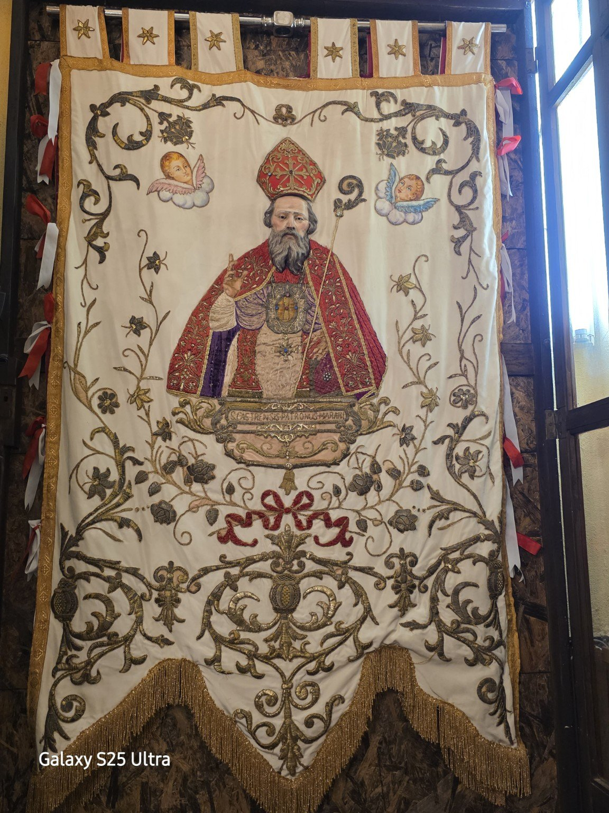
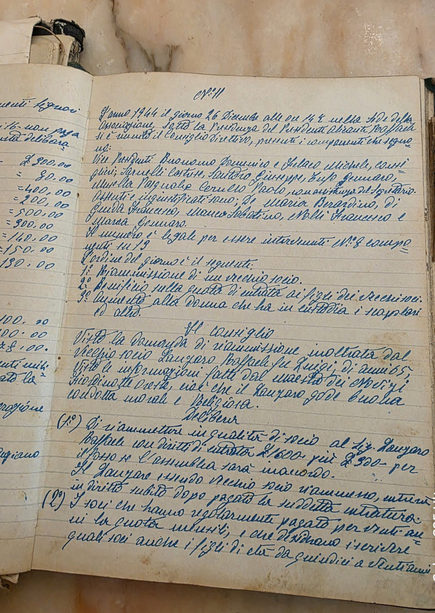
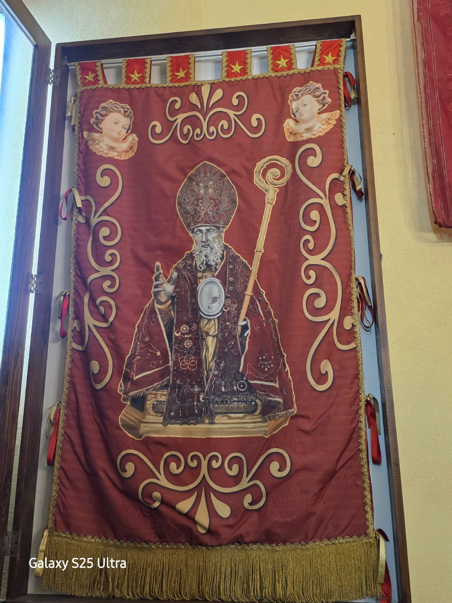

Associazione San Castrese.
Memoria, culto e tradizione a Marano.
Dal 1909 l'Associazione custodisce e tramanda il legame tra Marano di Napoli e il suo Santo Patrono. Bandiere, registri, insegne e memorie conservate nella sede raccontano oltre un secolo di vita associativa.
Gli appuntamenti.
Scorri la nostra storia.
Il prossimo evento e alcuni momenti già vissuti dall'Associazione, raccolti in uno spazio compatto e scorrevole.

Piazzale San Giovanni Paolo II: stand gastronomici e solidali, musica con Gloria Grieco e Mebi ed estrazione finale.
Scopri l'evento →
Il cammino dedicato a San Castrese tra natura, preghiera, territorio e partecipazione della comunità.
Rivivi l'evento →
Il ritorno storico a Marano delle sacre spoglie di San Castrese provenienti da Monreale.
Rivivi l'evento →
Raccoglimento, segni della Passione e momenti di preghiera vissuti insieme nella sede dell'Associazione.
Rivivi l'evento →
I momenti del Natale vissuti nella sede tra tradizione, benedizione del presepe e vita associativa.
Rivivi l'evento →Tra gli ambienti di Via Casalanno 1 sono conservate testimonianze autentiche della vita associativa: dalla bandiera del 1909 ai registri manoscritti, fino alle insegne della storia contemporanea.

Una delle testimonianze più antiche dell'identità associativa.
Scopri il patrimonio →
Una pagina manoscritta documenta la riunione del Consiglio Direttivo del 26 dicembre 1944.
Entra nell'archivio →
Benedetta da Papa Francesco in Piazza del Plebiscito il 21 marzo 2015.
Leggi la storia →Un patrimonio da conoscere.
Una storia da custodire.
Scopri la sede di Via Casalanno 1, il patrimonio storico e devozionale, le attività associative e l'archivio della memoria.
Conosci gli spazi dell'Associazione e il ruolo della sede nella vita associativa.
Reliquie, insegne, documenti e testimonianze custodite e valorizzate dall'Associazione.
Iniziative culturali, ricorrenze, pellegrinaggi e momenti di partecipazione.
Dalle origini del sodalizio del 1909 alla storia contemporanea dell'Associazione San Castrese.
Fotografie, documenti e memorie che raccontano la storia dell'Associazione e del culto di San Castrese.
Unisciti all'Associazione e contribuisci alla tutela e alla trasmissione di questa tradizione.